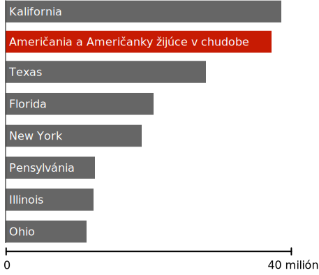

Mierka bohatstva
Z pôvodného Wealth Shown To Scale preložila a upravila Zuz
Tisíc dolárov
68,000 dolárov (Ročný mediánový príjem domácnosti v USA)
1 millión dolárov
1 miliarda dolárov
185 miliárd dolárov (toľko má Jeff Bezos)
Haha, robíme si srandu, sme asi tak v tretine. Len sa ďalej posúvaj, je tam toho viac.
Ešte aj bohatstvo veľmi bohatých ľudí bledne v poronaní s neporovnateľným bohatstvom ľudí, ktorí sa nachádzajú na úplnom vrchu (0,0001 %).
Títo ľudia sami seba vnímajú ako úžasne bohatých a často protestujú proti opatreniam zameraným na znižovanie nerovnosti.
Ale mnohí a mnohé z nich vôbec nepochopili, aký priepastný rozdiel existuje medzi nimi a tými najbohatšími.
Môžeme žiť vo svete, kde ešte stále existujú bohatí ľudia bez toho, aby sme odovzdávali takmer všetky peniaze tých superbohatým.
Žiadna ľudská bytosť nepotrebuje a ani si nezaslúži toľkoto bohatstva.
400 najbohatších ľudí v USA (3,2 biliónov dolárov)
Bilión dolárov je tak obrovská čiastka že môžeme pokojne povedať aj "iks sextiliónov kvintiliónov dolárov". V tejto časti si teda skúsime predstaviť, koľko to naozaj je, tým, že si ukážeme, čo by sa dalo s rôznymi čiastkami tejto sumy dokázať.
Ako pôjdeme ďalej, skús si pamätať: všetko toto bohatstvo je pod kontrolou tak malej skupiny, že by sa celá vošla do jedného Boeingu 747 - a 260 sedadiel by ešte zostalo prázdnych.
Čo by sme mohli urobiť s menej ako desiatimi percentami tejto sumy?
Zaočkovať každého človeka na svete proti koronavírusu
Na základe údajov o nákladoch na vakcíny a nákladoch na zaočkovanie by stálo asi 200 miliárd dolárov zaočkovať každého človeka na Zemi, čo sa rovná asi len 6 % majetku, ktorý momentálne vlastní 400 Američanov. Aj keby zaplatili celý tento očkovací program, boli by stále o 40 miliárd dolárov bohatší, ako boli pred pandémiou.
Ešte aj v prípade, že neberieme do úvahy nesmierne naliehavú humanitárnu potrebu celosvetového zaočkovania proti COVID-19, pre bohaté krajiny je to aj vec sebeckého záujmu: čím dlhšie cirkuluje covid po svete, tým väčšia je prevdepodobnosť vzniku variantu odolnému vakcíne a teda aj zničenia pokroku, ktorý sme v boji proti koronavírusu urobili.
Svetová zdravotnícka organizácia (WHO) práve (v roku 2020) organizuje celosvetový program darovania vakcín, ktorým chcú do konca roka 2021 zaočkovať asi 20 % obyvateľstva v chudobných krajinách, a ešte aj táto iniciatíva je v ťažkých finančných ťažkostiach.
Natrvalo eradikovať (zničiť) maláriu
Malária je jedna z najhorších chorôb, aká kedy ľudstvo postretla. Má sa za to, že pravdepodobne zabila viac ľudí v histórii ľudstva než ktorákoľvek iná choroba. Iba v 20. storočí zabila malária viac ľudí ako čierna smrť (mor).
Všetkým týmto úmrtiam sa dá predísť. Veda okolo prevencie a liečby malárie je veľmi dobre uchopená a jasná a v rozvinutých krajinách sa univerzálne využíva.
Odhaduje sa, že malária by sa dala celosvetovo eradikovať do roku 2030 a stálo by to asi 1,84 dolára na ohrozenú osobu na rok, alebo dokopy asi 100 miliárd dolárov. To sú asi tri percentá bohatstva, ktoré momentálne vlastní 400 najbohatších Američanov a Američaniek.
Približne 800 detí dnes zomrie na maláriu. Skupinka superbohatých ľudí by to mohla zastaviť za tak málo peňazí, že by si to asi ani nevšimli. Ale oni sa rozhodli, že to neurobia.
Vymazať všetky nezaplatené dlhy na zdravotnej starostlivosti v Spojených štátoch
Američania a Američanky majú asi81 miliárd dolárov dlh na zdravotnej starostlivosti, ktorý nedokážu splatiť tak dlho, že sa odráža na hodnote ich kreditu (to je ukazovateľ finančnej spôsobilosti, ktorý ovplyvňuje, či niekomu schvália hypotéku na byt, predajú auto alebo dokonca dajú prácu). Vo všeobecnosti ide o malé sumy, ich stredná (mediánová) hodnota je asi 207 dolárov na osobu.
Tieto dlhy negatívne ovplyvňujú kredit viac než 50 miliónov Američanov a Američaniek a teda aj ich možnosti bývania, zamestnania a pôžičiek. Cena proporčného vyplatenia tohto dlhu by sa rovnala asi 2,5 % všetkého bohatstva kontrolovaného 400 najbohatšími Američanmi a Američankami.
Vymaniť každého človeka v USA z chudoby
Populácia amerických štátov v porovnaní s chudobou, 2021
Každý jeden človek žijúci v Spojených štátoch by mohol byť pozdvihnutý nad hranicu chudoby jednou finančnou dávkou v hodnote asi 10 000 dolárov pre chudobnú rodinu (a asi 7 000 dolárov pre chudobného jednotlivca). Celková suma by bola 170 miliárd, čiže niečo nad 5 % bohatstva, ktoré kontroluje 400 najbohatších ľudí v USA.
Môže sa zdať, zvláštne, že by jednorazová dávka mohla mať dlhotrvajúci efekt na chronickú chudobu. Ale prekvapivé na chudobe je to, že je premenlivá. Ľudia sa počas svojich životov mnohokrát pohybujú medzi chudobou a lepšou situáciou. Jeden dobrý rok môže mať obrovský a dlhotrvajúci dopad.
Množstvo dát už dnes podporuje hypotézu, žejednorazové finančné injekcie môžu trvalo premeniť lokálne ekonomiky. Keď majú ľudia zrazu k dispozícii rezervu, začnú investovať do vlastnej budúcnosti. Vrátia sa do školy, zaobstarajú si prostriedok na dopravu, zaplatia starostlivosť o deti, splatia ničivé dlhy a spravia množstvo vecí, ktoré zlepšia ich vyhliadky na zamestnanie a finančné plánovanie.
Dáta v USA ukazujú, že asi polovica ľudí, ktorí sa v daný rok dostanú z chudoby, vydrží nad jej hranicou aspoň päť rokov.. Asi tretina sa nad ňou drží aj po desiatich rokoch
Takéto opatrenie by nebolo trvalým riešením pre všetkých Američanov a Američanky. Samozrejme, mnohí a mnohé by sa rýchlo prepadli naspäť do chudoby, a mnoho z nich čelí tak veľkým dlhom, že by pre nich takáto dávka nespravila veľký rozdiel. Ale pre milióny a milióny z nich by to bolo niečo, čo úplne zmení ich život. Bol by to nezabudniteľný sociálny program, ktorý by zmenil americkú ekonomiku na delé desaťročia dopredu.
Umožniť prístup k pitnej vode a toalete všetkým ľuďom na Zemi.
Asi 844 miliónov ľudí nemajú prístup k žiadnej čistej vode. Asi tak isto veľa ľudí nemá prístup k toalete alebo latríne, a teda musia vykonávať potrebu na otvorenom priestranstve.

Bez čistej vody
Kontaminovaná voda je hlavným zdrojom ochorení ako cholera, dyzentéria (úplavica) a týfus. Odhaduje sa, že kontaminovaná voda zabije ročne asi 829 000 ľudí, čo z nej robí jedného z najvačších zabijakov na svete. Náklady na zabezpečenie čistej vody a nejakej formy toalety by boli asi 240 miliárd dolárov, teda 7,5 % bohatstva, ktoré kontroluje 400 najbohatších ľudí v USA.
Ćo by sme mohli spraviť so 40 % týchto peňazí?
Poskytnúť platenú rodičovskú dovolenku každému Američanovi a Američanke na ďalších 100 rokov
Náklady na platenú materskú a otcovskú dovolenku sa odhadujú na 12 miliárd dolárov ročne. To je 0,39 % bohatstva kontrolovaného 400 Američanmi a Američankami. Je to 5 % bohatstva, ktoré zarobili len v roku 2020.
Ak by takúto platbu opakovali každý rok po dobu sto rokov, rovnalo by sa to 39 % bohatstva, ktoré vlastnia dnes.
Tento program je komplexnejší ako iné, ktoré sme na tejto stránke rozoberali, pretože platby by boli hradené priebežne a nie jednorazovo, a náklady na takéto opatrenie sa výrazne líši v súvislosti na výške dávky, ktorá by bola vyplácaná. Ale aj napriek tomu, ak sa pridržíme pravidla päťpercentného vyplácania (5% endowment payout rule), superbohatí by mali byť schopní financovať program rodičovskej dovolenky, ktorý je dvanásťkrát štedrejší ako ten, ktorý tu prezentujeme navždy a stále nekonečne bohatnúť, a to aj s prihliadnutím na infláciu.
Dať 10 000 dolárov každej americkej domácnosti
Pracujúci boli počas besnenia koronavírusu v roku 2020 často vystavení strašnej voľbe medzi smrťou kvôli príliš skorému otvoreniu a ekonomickou krízou spôsobenou karanténou. Čo zostalo nevypovedané, ale úplne samozrejmé, bola domnienka, že Američania a Američanky nemohli pokryť svoje životné náklady inak ako prácou alebo neudržateľnými vládnymi výdavkami, ktoré viedli k deficitu—odkiaľ inak by asi tie peniaze mohli pochádzať?